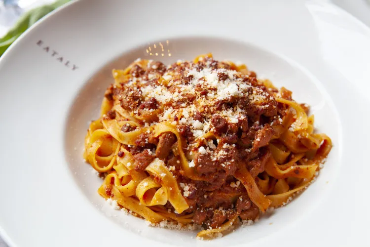

Ragù Bolognese

Meat Sauce for Tagliatelle, Lasagne, and other Pasta
3 tbspolive oil1½ cupsdiced onion1 cupdiced celery1 cupdiced carrots3 mincedgarlic cloves3 poundsground beef, pork, veal (ideally 1 Lb of each, but any mix will work in a pinch as long as the meat has a good bit of fat)1 tbspdiamond crystal kosher salt (or to taste)- freshly ground black pepper to taste
- pinch of nutmeg (optional)
1½ cupsmilk (ideally whole or at least 2%)26 ozdiced canned tomatoes2 cupsdry white wine
Set a large, heavy, oven safe pot over medium heat and add the oil. When the oil gets hot, add the onions, carrots, celery, and salt to the pot and stir to combine. Cook the veggies stirring occasionally until the onions are translucent and golden, 10 to 15 minutes.
Add the garlic, another pinch of salt, and cook another couple of minutes. Add the meat and break it up with a large spoon until there are no chunks left and all the pink is gone. Season with salt, pepper and nutmeg (optional). Stir in the milk. Simmer gently for 20 minutes.
Preheat your oven to 300F (150C). Add the tomatoes, wine, and a bay leaf. Bring to a simmer and put in the middle of a preheated oven uncovered for 3 hours. Stir well, taste and correct for salt.